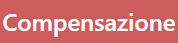
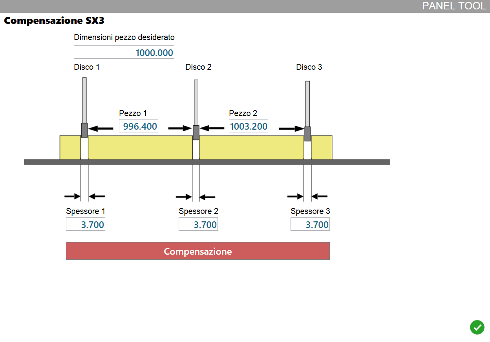

Questa funzione consente di eseguire compensazioni manuali alla distanza tra gli attestatori della macchina.
È da utilizzare in caso si noti una discrepanza tra le dimensioni dei pezzi programmati e le misure osservate su quelli ottenuti.

Valori richiesti
Durante la procedura di compensazione, viene richiesto all’operatore di inserire questi valori.
Dimensioni pezzo desiderato | Misura programmata del lato dei pezzi che si desidera controllare. |
Pezzo | Misura riscontrata del lato del pezzo le cui estremità sono state tagliate utilizzando il disco indicato ed il successivo. |
Spessore | Spessore del disco montato sull’attestatore indicato. |
Infine, premere il pulsante.
 | Compensazione |
Procedura da seguire
Come prima cosa, importare in Parametrix due pezzi rettangolari aventi le stesse dimensioni.
Disporli necessariamente affiancati su una lastra come mostrato figura, e procedere con l’esecuzione della lavorazione.

Accedere alla finestra per la compensazione manuale degli attestatori e compilare i campi richiesti.
Deve essere inserita la misura originale del lato dei rettangoli programmati.
Poi, le misure riscontrate dello stesso lato di ciascun rettangolo tagliato, facendo attenzione di indicare quali dischi sono stati utilizzati.
Infine, lo spessore di ogni disco montato in macchina.

Al termine, premere il pulsante sottostante per fare calcolare a Parametrix la compensazione da adottare su ogni attestatore.